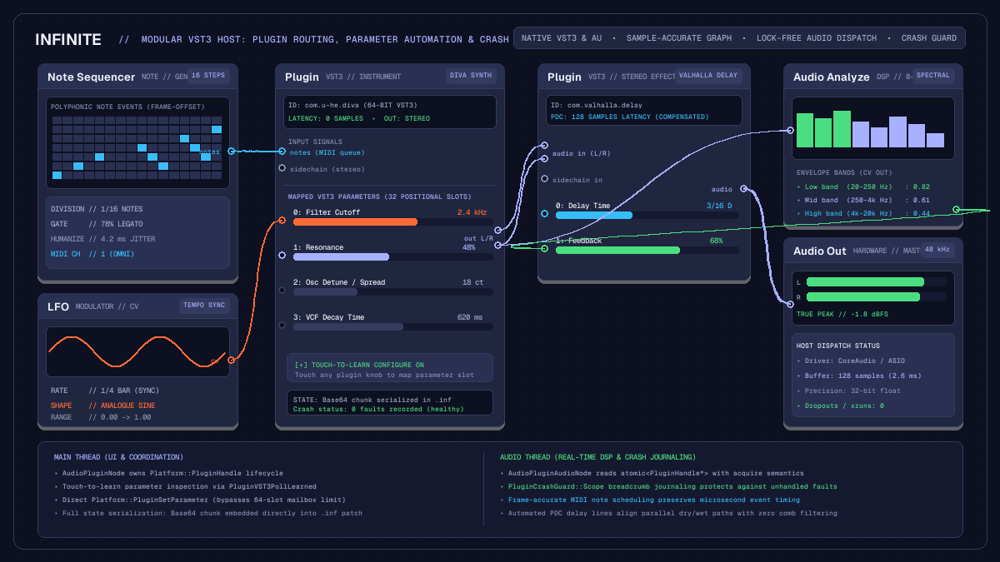

Product
Modular VST3 host: route plugins, MIDI and CV on an open canvas
Explore modular VST3 host architecture in Infinite: patch audio and MIDI between plugins, route CV automation across an open canvas, and isolate plugin crashes.

on this page
- Architecture of a modular plugin host
- Lock-free parameter delivery and modulation
- Frame-accurate MIDI note scheduling
- Flexible audio routing, sidechaining and splitting
- Plugin delay compensation across modular topologies
- Crash isolation and recovery
- Patch format and state persistence
- Step-by-step: building a modular plugin patch

A modular VST3 host breaks audio plugins out of linear channel strips and fixed insert slots. In conventional digital audio workstations, instrument and effect plugins reside inside vertical tracks, where signal flows strictly from top to bottom. Routing one synthesiser into multiple parallel filter chains, tapping intermediate sidechain signals, or modulating plugin dials with external mathematical operators requires awkward aux buses, dummy tracks, or complex routing matrices. For electronic musicians and sound designers exploring generative composition, a dedicated vst3 host modular environment offers an entirely different workflow: plugins exist as free-floating nodes on an open canvas, connected by typed cables that carry stereo audio, frame-accurate MIDI, and continuous control voltage.
In Infinite, native VST3 and Audio Unit plugin hosting is built directly into the core node graph. Rather than isolating third-party instruments inside hidden track panes, each loaded plugin is represented by a Plugin node. Audio, note events, and automation signals enter and exit via explicit pins, making complex parallel processing, feedback loops, and cross-plugin modulation visible and editable at a glance.
This article details the technical architecture of Infinite's modular plugin host, explaining how the engine maintains real-time safety, dispatches sample-accurate note events, maps modulatable parameters, compensates for latency, and protects the canvas against third-party plugin crashes.
Architecture of a modular plugin host
Hosting arbitrary binary plugins inside a real-time audio graph introduces demanding concurrency constraints. Third-party plugins execute compiled machine code that may perform non-trivial DSP operations, allocate memory during initialisation, or communicate with native window managers. To maintain steady buffer playback without dropouts or audio glitches, Infinite isolates plugin execution using a strict two-thread design.
The hosting architecture separates duties between two distinct objects:
- The main-thread coordinator (
AudioPluginNode): runs on the UI thread, managing plugin discovery, bundle loading, parameter mapping, preset state, and native editor windows. - The audio-thread processor (
AudioPluginAudioNode): executes inside the high-priority audio callback, pulling audio buffers, dispatching scheduled MIDI events, and invoking the plugin's render function.
Connecting these two halves is the plugin handle itself, stored as an atomic pointer (std::atomic<Platform::PluginHandle*>). The main thread prepares, configures, and parameterises the plugin instance before exposing it to the audio loop. When the audio engine evaluates the graph topology, the audio thread loads the atomic pointer with acquire semantics and calls the platform rendering wrapper (Platform::PluginRender).
+-----------------------------------------------------------------+
| MAIN THREAD |
| |
| [AudioPluginNode] |
| | |
| +---> Window Management (Native Win32 / Cocoa / X11) |
| +---> Preset State Serialization (Base64 chunk to .inf) |
| +---> Parameter Mapping (32 positional modulation pins) |
| +---> Touch-to-Learn Parameter Discovery |
+-----------------------------------------------------------------+
|
atomic<PluginHandle*> (Acquire / Release)
|
v
+-----------------------------------------------------------------+
| AUDIO THREAD |
| |
| [AudioPluginAudioNode] |
| | |
| +---> Pull upstream AudioCable & NoteCable buffers |
| +---> Package frame-offset MIDI events into VST3 queue |
| +---> PluginCrashGuard::Scope breadcrumb journaling |
| +---> Invoke Platform::PluginRender |
| +---> Advance Plugin Delay Compensation (PDC) line |
+-----------------------------------------------------------------+When swapping or unloading a plugin on the canvas, the old handle is never freed immediately on the main thread. Instead, it is retired across an engine generation boundary. This discipline ensures that if an in-flight audio callback is actively executing inside the third-party binary, the pointer remains valid until the callback concludes and the topology advances.
Lock-free parameter delivery and modulation
One of the defining advantages of a modular VST3 host is the ability to modulate any plugin parameter with external control signals. In Infinite, low-frequency oscillators (LFO), envelope generators (Envelope), chaos modulators (Random), and audio envelope followers (Audio Analyze) can patch directly into a plugin's parameter pins.
Most native nodes in Infinite deliver automation to the audio thread via a 64-slot parameter mailbox (ParamMailbox). However, complex VST3 plugins frequently expose hundreds or thousands of automatable parameters. Funnelling these through fixed mailbox slots would quickly exhaust thread communication buffers. Furthermore, modern VST3 instruments incorporate their own internal parameter smoothing algorithms.
To resolve this, Infinite implements an Ableton-style parameter configuration model with positional mapping slots:
[Note Sequencer] ---> [Plugin: Poly Synth] ===> [Plugin: Reverb] ---> [Audio Out]
| ^
| |
(Cutoff Parameter) (Mix Parameter)
^ ^
| |
[LFO] [Envelope]A user clicks the Configure toggle on the Plugin node body and touches any control inside the plugin's native graphical interface. Infinite's parameter-learn routine queries PluginVST3PollLearned to capture the parameter's 64-bit address, display title, and minimum and maximum bounds. It then assigns the control to one of 32 positional mapping slots (AudioPluginNode::Mapping).
Each mapped parameter appears on the node body as a horizontal slider equipped with an input modulation pin. When a modulation cable lands on the pin, modulation values sum with the base slider position. During graph evaluation (CookIfNeeded), the main thread pushes updated values directly into the plugin instance via Platform::PluginSetParameter.
Crucially, mapping slots are positional and are never compacted when an entry is removed. Modulation bindings in Infinite are keyed by the node index and parameter index. If a user unmaps an earlier parameter, the slot remains as an inactive placeholder rather than shifting subsequent indices, ensuring existing modulation cables never jump to unintended destinations.
Frame-accurate MIDI note scheduling
When hosting virtual instruments, timing jitter destroys the groove and transient clarity of sequenced parts. A modular canvas must deliver note-on, note-off, velocity, and pitch-bend events with sample accuracy.
In Infinite, musical events travel along dedicated note cables (NoteCable). Generative nodes such as the Note Sequencer, Arpeggiator, or Chorder output event queues containing note values, velocity layers, duration gates, and integer sample offsets relative to the start of the current processing block.
When the Plugin node processes its inputs, it inspects its note pin. If a note cable is connected, the audio thread converts each pending event into a standard three-byte MIDI packet and passes it to the VST3 event dispatcher:
// Conversion of internal NoteCable events to VST3 frame-offset events
for (const NoteEvent& ev : noteBuffer)
{
unsigned char midiBytes[3];
int length = 0;
if (ev.type == NoteEventType::NoteOn)
{
midiBytes[0] = static_cast<unsigned char>(0x90 | (ev.channel & 0x0F));
midiBytes[1] = static_cast<unsigned char>(std::clamp(ev.pitch, 0, 127));
midiBytes[2] = static_cast<unsigned char>(std::clamp(static_cast<int>(ev.velocity * 127.0f), 1, 127));
length = 3;
}
else if (ev.type == NoteEventType::NoteOff)
{
midiBytes[0] = static_cast<unsigned char>(0x80 | (ev.channel & 0x0F));
midiBytes[1] = static_cast<unsigned char>(std::clamp(ev.pitch, 0, 127));
midiBytes[2] = 0;
length = 3;
}
if (length > 0)
{
Platform::PluginVST3ScheduleMIDIEvent(handle, ev.frameOffset, midiBytes, length);
}
}The underlying VST3 wrapper populates the plugin's IEventList interface, preserving the exact frameOffset within the block. Whether the audio buffer size is set to 64 samples or 512 samples, instruments respond to note triggers at the exact microsecond intended by the sequencer, preventing the phase flammability and rhythmic smearing typical of un-timestamped message loops.
Flexible audio routing, sidechaining and splitting
Traditional mixers route signals through rigid master channels and auxiliary returns. On a modular canvas, audio paths are completely fluid. A stereo output from a Plugin node can connect simultaneously to ten different downstream effect chains, or feed an audio-reactive visualiser while continuing into hardware outputs.
Consider a dynamic sidechain compression setup. In hardware racks or modular rigs, patching a kick drum into a vocal or bass compressor requires dedicated patch cables. In Infinite, the Plugin node detects whether a loaded plugin exposes sidechain audio buses by querying PluginVST3SidechainChannels. When auxiliary inputs exist, the node dynamically exposes an additional sidechain input pin:
- Slot 0: main stereo audio input (
in) - Slot 1: note event input (
notes, visible when the plugin accepts MIDI) - Slot 2: sidechain stereo input (
sidechain, visible when sidechain buses exist)
To set up rhythmic ducking, a musician patches the audio output of a kick drum synthesiser into both the master Mixer node and the sidechain pin of a downstream compressor Plugin. Both connections exist simultaneously without duplicating tracks or setting up complex bus sends.
Furthermore, because audio connections in Infinite carry multi-channel floating-point data, users can insert utility nodes like Splitter, Gain, and Blend Audio at any point in the signal chain. Splitting a synthesiser output into three frequency bands using high-pass, band-pass, and low-pass filters allows different third-party distortion and delay plugins to process each frequency band independently before summing back into a master bus.
Plugin delay compensation across modular topologies
When effect plugins utilise lookahead limiters, spectral fast Fourier transforms, or heavy convolution algorithms, they introduce processing latency. Without compensation, combining a dry audio signal with a delayed processed signal results in comb filtering, phase cancellation, and hollow transients.
Infinite incorporates automated Plugin Delay Compensation (PDC) across arbitrary modular topologies. Each processing cycle, every Plugin node queries its underlying instance using PluginVST3LatencySamples. The audio engine's topological sorter analyses latency across all converging paths in the patch:
+----------------------------+
| Audio Source |
+----------------------------+
/ \
/ \
Zero Latency / \ 512 Samples Latency
/ \
v v
[Dry Delay Line] [Lookahead Limiter VST3]
(PDC: +512 samples) (Reports: 512 samples)
\ /
\ /
v v
+----------------------------+
| Summing Bus |
+----------------------------+When two cables converge at a mixer or summing node, Infinite calculates the difference between their accumulated upstream latencies. The engine allocates an internal circular delay line (CompensationDelay) on the faster path, retarding the dry audio by the exact number of samples reported by the plugin.
Crucially, zero-latency paths allocate no delay memory whatsoever. The PDC mechanism is verified headless using automated impulse response checks, confirming that summed transients arrive on identical sample indices without attenuation or phase distortion.
Crash isolation and recovery
Because VST3 plugins run within the host's memory space, an unhandled exception or null pointer dereference inside a third-party plugin could bring down the entire application. Losing an unsaved modular patch during a live performance or studio session is unacceptable.
Infinite mitigates this vulnerability through its PluginCrashGuard subsystem. Before invoking any third-party render call on the audio thread, the engine enters an execution scope:
{
PluginCrashGuard::Scope guard(pluginIdentifier.c_str());
Platform::PluginVST3Render(handle, inBuffers, 2, outBuffers, 2, frames, &transport, scBuffers, scChannels);
}The guard stores a pointer to the active plugin's identifier in a thread-local variable, requiring only a single pointer write with zero dynamic memory allocation, making it safe for real-time audio threads.
If the plugin triggers a fatal segmentation fault or hardware trap, Infinite's platform crash handler executes. Because the thread was inside an active Scope, the crash handler extracts the offending plugin's identifier and writes an async-signal-safe breadcrumb marker to disk before terminating.
Upon the next launch, Infinite reads the crash journal:
- Audio Units: the crashed plugin is automatically quarantined and loaded out-of-process via the macOS Audio Unit hosting service, ensuring future crashes mute the single node rather than crashing the DAW.
- VST3 Plugins: because the VST3 standard lacks an operating-system-level out-of-process daemon, Infinite marks the node on the canvas, bypasses processing, and displays an informative banner naming the plugin that failed. The user can safely remove the offending plugin or update its binary without losing the rest of their patch cords, macros, or synthesizer configurations.
When a plugin behaves reliably, running it directly in-process eliminates inter-process memory copies, preserving minimal latency and peak CPU efficiency.
Patch format and state persistence
Saving and reloading complex modular setups must restore every third-party plugin to its exact preset state, including custom sound banks, sample tables, and internal GUI configurations.
Infinite stores patches as human-readable plain text .inf files. When saving a patch, the main thread calls PluginVST3SaveState on each active handle. The plugin serialises its complete internal data block into an opaque binary stream, which Infinite encodes into standard Base64 text.
In the .inf patch file, the plugin entry is written alongside its canvas coordinates, pin connections, and mapped controls:
node 4 Plugin x=-140.0 y=85.0
set identifier "com.u-he.diva"
set name "Diva Lead"
set bypass 0
map 0 1024 "Cutoff" 0.0 1.0 0.65
map 1 1025 "Resonance" 0.0 1.0 0.42
state "VkVTVDMBAAAAfAAAA...[Base64 chunk]..."
cable 2:0 4:1 notes
cable 4:0 7:0 audio
cable 4:1 7:1 audio
mod 1:0 4:0 0.35When reopening the patch, Infinite instantiates the plugin, restores its binary state via PluginVST3RestoreState, and reconnects all audio and modulation cables. Because parameter mapping slots remain stable, external LFOs and sequencers immediately resume driving the synthesiser's internal filters without manual re-patching.
Step-by-step: building a modular plugin patch
To experience the power of a modular VST3 host, consider constructing a dynamic patch combining native algorithmic note generation, an external synthesiser, and audio-reactive modulation:
- Spawn a
Note Sequencernode. Set the step division to 16th notes and configure an eight-step generative sequence with varying velocity levels. - Add a
Pluginnode and select your favourite VST3 instrument from the picker. Connect the output of theNote Sequencerinto thenotespin of thePluginnode. - Patch the stereo audio outputs of the
Pluginnode into anAudio Outnode to hear the synthesiser output. - Click Configure on the
Pluginnode and adjust the synthesiser's filter cutoff dial in its native interface. A new slider labelled Cutoff appears on the node body with its own modulation pin. - Spawn an
LFOnode. Set its shape to sine and rate to 1/4 bar. Cable the output of theLFOinto the newly created Cutoff modulation pin on thePluginnode. Adjust the modulation depth dial to hear the filter sweep in tempo. - Split the synthesiser's audio into an
Audio Analyzenode. The 8-band fast Fourier transform extracts low, mid, and high energy envelopes. Cable the high-frequency band into an external reverb plugin's decay time or into a Field Pixel shader node to render synchronised visual art.
By uniting virtual instruments, audio effects, generative sequencing, and parameter modulation on one unified canvas, a modular VST3 host unlocks expressive creative possibilities that conventional track-based digital audio workstations cannot match. Discover ready-made templates and patch ideas in the Infinite patch library.